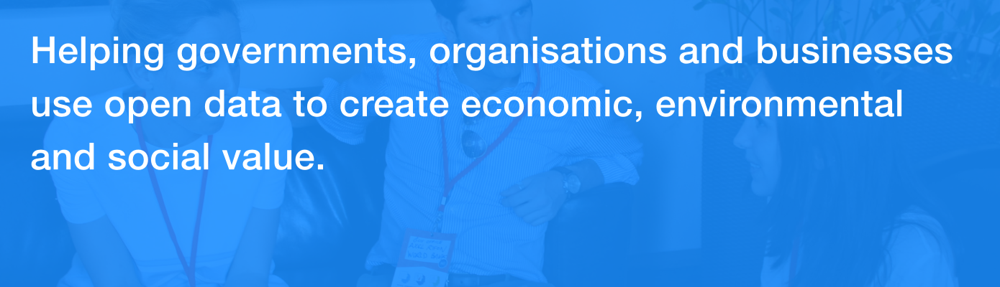

ODI Advisory is a boutique data consulting team within the ODI. We examine the way an organisation produces, uses and shares data to help our clients to solve problems and create new value.
Working at the intersection of data and innovation, we draw on world-class expertise from the ODI and its global network of nodes, partners and members.
As a small nonprofit, the ODI likes to work with organisations that reflect our values and our way of working. We are a small team, we love co-creating with our clients, and we like to create big change quickly. Any income we earn is reinvested in the pursuit of the ODI’s vision, knowledge for everyone.
What we offer governments
We are a trusted advisor to governments on data and innovation. Some of our clients include UK Government departments; the European Union and the World Bank; the governments of Mexico, Malaysia, Shanghai and Tanzania.
We pride ourselves on providing practical answers to the big questions that governments face in the evolving data landscape:
What data infrastructure is needed to help governments tackle their most pressing policy problems?
How does improving its data use help an organisation to cut costs and find new opportunities?
How can a government create the culture it needs to become a data-driven organisation?
Our consultants are passionate innovators with a combination of government, corporate and development backgrounds. The team is led by Richard Stirling, who designed and implemented data.gov.uk, which remains among the world’s best data programmes.
Our clients benefit from our experiences working all over the world. We know what kinds of challenges governments face in making data programmes successful, but create tailored interventions based on what we learn on the ground in different contexts, from the UK to China, Latin America to sub-saharan Africa. Clients appreciate our team’s diverse experience, our focus on project impacts, and our creative approach to problem-solving.
For more information, please contact [email protected]
What we offer companies
Modern companies collect and store huge quantities of data. We help companies to work out what opportunities might lie within the data they have, and how they might prioritise them.
Our clients ask us questions like:
- How can we improve our decision-making by using our data better?
- What does the data team of the future look like, and how can we start building it now?
- How might open data create business opportunities for us?
As a small team, we specialise in short, intensive engagements. We help our clients to better understand their data needs and achieve results quickly.
With repeat clients, we have built longer partnerships involving a series of projects, including with companies like Arup, Syngenta and Thomson Reuters.
For more information, please contact [email protected].